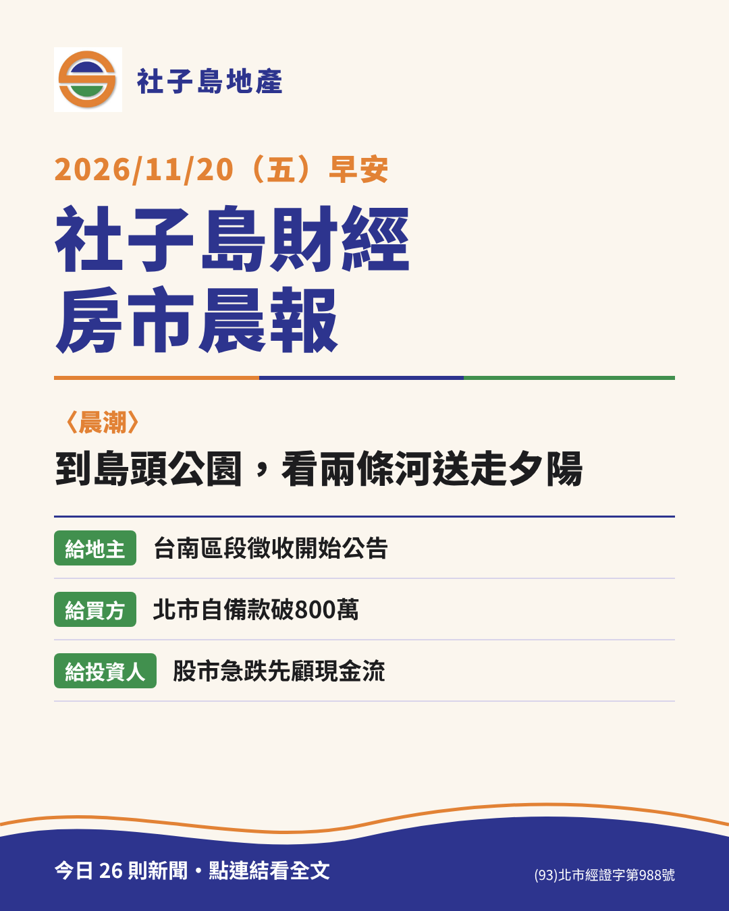

2026/11/20 (五) 早安
社子島財經房市晨報｜到島頭公園，看兩條河送走夕陽
北士科今天重回版面：黃仁勳的去留風波，讓北士科總部再被拿出來討論。另外，我們替地主多挑了幾則切身的題目：權狀上有的不一定都合法、都更為什麼總卡在半路、祖產別等到被代為標售才處理。今天共 26 則，點標題就能讀原文。
〈潮汐表〉今天的三道潮水
- 給地主台南科技產業專區區段徵收公告30天、抵價地比例45.15%；別人家的公告，正好是社子島的預習。
- 給買方台北市購屋平均自備款已超過800萬；股市震盪時，頭期款別放在會大起大落的地方。
- 給投資人台股四天跌掉5,248點，金管會擴大限空、國安基金護盤；先顧好現金流，再談下一步。
〈晨潮〉系列連載・社子島看夕陽①
到島頭公園，看兩條河送走夕陽
昨天在坤天亭，阿公問我們：「聽講島頭公園，兩條溪仔做伙的所在，看日頭落山閣較媠。到底欲佇佗位看？啥物時陣去上適合？」阿公，今天我們就從這裡開始一個新的系列：社子島看夕陽。第一站，就是您說的島頭。
島頭公園在社子島的最尖端，基隆河在這裡流進淡水河。依公開介紹，這片地是臺北市政府用基隆河疏濬的土方填出來的灘地；站上觀景平台，左右兩條河、前方一大片水面，有人形容是約270度的河景，遠一點看得到關渡大橋和觀音山。
要站哪裡？建議走到觀景平台的最前端，面向淡水河。這個季節太陽落得偏南，大約在觀音山的左手邊、往五股和蘆洲那一側沉下去；如果想把觀音山和夕陽放在同一個畫面裡，平台往右邊靠一點，視野會比較完整。
幾點去？台北一年裡最早的日落出現在11月底，大約下午5點過一點。所以這幾天，下午4點半前到最從容，先散步、找位置，等天色一層一層變紅。確切的日落時間，出發前請以中央氣象署的日出日沒資料為準。
老實說，看不看得到大夕陽，要看雲。有人在部落格寫過，有幾次只看到短短的晚霞，太陽就躲進雲裡了。不過東北季風轉乾冷後，氣象專家預估週六到週一連三天晴朗，正是適合去的日子；河邊風大，外套和帽子記得帶。
去島頭公園看夕陽，先記這四件事
- ① 走到觀景平台最前端，面向淡水河
- ② 這幾天日落約下午5點出頭，4點半前到
- ③ 冬天太陽落在觀音山左手邊，看雲決定運氣
- ④ 河邊風大，外套帽子帶著；公車先查動態
怎麼去？公開資料寫，可從捷運劍潭站搭紅10、或從圓山站搭215，在臺北海洋科大附近下車，再走幾分鐘就到；公園免費開放，有公廁，也接得上社子島的環島自行車道。公車路線偶爾會調整，出門前用臺北市公車動態再查一次。
兩條河在島頭握手，幾十年來沒有停過。未來社子島的河岸怎麼規劃，這個看夕陽的地方會不會留給大家，值得我們一起關心。下週五，系列第二站，我們去福安碼頭以外的另一段堤邊。往下滑，今天的新聞照新排法走，最後在〈廟口泡茶區〉等您來電。
——社子島地產團隊
主商圈：社子島・北士科・關渡洲美平原1 則
黃仁勳請辭後表態願回任，網路聲量盤點他對台灣的五大影響，北士科輝達總部入列；社子島區段徵收計畫仍在內政部審議，關渡洲美平原本週沒有新消息
大台北：台北市・新北市・基隆2 則
中和新案單價站上每坪126萬、千億開發案明年第一季登場；西門町電影街的老戲院與地主合建，都更市場由兩家建商主導
其他縣市：嘉義・高雄（離台北由近到遠）3 則
嘉義「棒流楷」成了 Google 地標，旁邊國宅房價漲5成；日月光仁武新廠動土，當地預售房價原地踏步；高雄亞灣社宅開放申請
稅務與法律實務6 則
台南第2批地籍清理代為標售完成，祖產權屬不清、遲遲未辦繼承的地，最後可能由政府標售；行政院通過《民法繼承編》修正草案，配偶與兄弟姊妹共同繼承時，配偶應繼分由二分之一提高到三分之二，仍待立法院審議；另有限定繼承怎麼還債、重購退稅看土地公告現值、包租代管與租補等實務。實際以主管機關公告為準
土地・區段徵收・工業地產2 則
台南科技產業專區區段徵收公告到12月16日、抵價地比例45.15%；前三季廠房交易1,491億創紀錄
都更・危老3 則
雙北九成六民眾支持都更、近八成嫌太慢，專家說卡關主因不是誘因不足；營建成本上升，也不能只跟地主說一句「蓋房子變貴」；ETtoday 座談談都更審查塞車怎麼解
全台房市・預售3 則
台北市第二季購屋平均自備款超過800萬、新竹十年增幅最大；國住都中心再釋出1,672戶社宅，11月30日起申請；台股重挫，網友哭頭期款縮水
人口・高齡・家戶1 則
60歲以上買盤把股市獲利轉進房市，房市出現「老年股神」
交通建設與生活1 則
東北季風轉乾冷，今天清晨平地低溫約11度；週六清晨可能更冷，週末白天晴朗回暖
今日財經大事4 則
台股19日重挫1,768點、收38,426點，本週四天累計跌5,248點；金管會20日起擴大限空，國安基金表示全力護盤；美股19日道瓊跌1,101點
〈阿公講古〉
週五一早，風是乾的，冷得很清爽。阿公在威靈廟前的廟埕慢慢走了兩圈，才在老位置坐下來，雙手捧著熱茶取暖。
聽我們說完島頭公園的事，阿公笑了：「彼塊地，早前是無的。是後來河底的塗挖起來，才一塊一塊填出來。阮少年時，坐船經過，只看著兩條溪仔的水色無仝款，一爿較濁、一爿較清。」
他喝了一口茶，又說：「水會做伙，人嘛愛做伙。厝邊頭尾有代誌，攏是坐落來，一句一句講予清楚。」
停了一會兒，阿公想起早上聽到的新聞：「聽講法律欲改，人若過身，某佮兄弟仔分財產的比例無仝款矣。阮若是先走，阮某佮阮小弟，這塊地到底欲按怎分？這馬就愛先準備啥物無？」
阿公的問題，我們明天回答。
〈廟口泡茶區〉
阿公從威靈廟走回廟口，熱茶剛好泡開。兩條河在島頭會合，各自帶著自己的水，卻一起往海走；一塊地要往前走，也要大家坐下來談。
市地重劃和區段徵收，一個是土地留在地主手上、一起分擔公共設施，一個是政府先徵收再配回抵價地；家裡的地如果在別的縣市碰上重劃，負擔比例、分回位置怎麼看，我們陪您一筆一筆對。
也想問問您：您在社子島哪個地方看過最美的夕陽？打個電話告訴我們，說不定就是我們系列的下一站。
不急著成交。我們是守在堤邊的人，守著每一塊土地的權益，直到把它交到願意耕耘它的人手上。
📞 歡迎先來電 0922-252-969先通個電話聊聊，再約時間來廟口喝茶。
 掃描 QR code，加 LINE 好友LINE ID：@shezidao💬 加 LINE
掃描 QR code，加 LINE 好友LINE ID：@shezidao💬 加 LINE
社子島地產團隊｜service@shezidao.com.tw
台北市士林區延平北路九段288號
週一至週六 9:30–18:00（週四 9:30–13:30），週日公休📞 來電 0922-252-969
本站由社子島地產開發有限公司經營，為民間不動產資訊網站，非臺北市政府官方網站；政府公告請以臺北市政府與地政局網站為準。
本期新聞由社子島地產團隊自自由時報地產天下、ETtoday房產雲、經濟日報、聯合新聞網、中央社、行政院、安傳媒、蕃新聞、Yahoo奇摩、住展雜誌、工商時報、網路溫度計 等來源收集，標題照原文，點擊即可開啟原始報導；今日新聞依「主商圈 → 大台北 → 其他縣市（離台北由近到遠）→ 全國主題」試排。〈晨潮〉島頭公園的形成、景觀與交通，參考國立臺北海洋科技大學社子島 USR「魅力士社」網頁及公開旅遊介紹與遊記；日落時間參考臺北市立天文科學教育館說明，實際請以中央氣象署日出日沒資料為準；天氣參考中央氣象署預報之媒體報導。〈晨潮〉〈阿公講古〉為本團隊之參考意見，不構成投資建議，亦不代表支持任何候選人。〈阿公講古〉的阿公，是我們依島上長輩的身影寫成的人物。